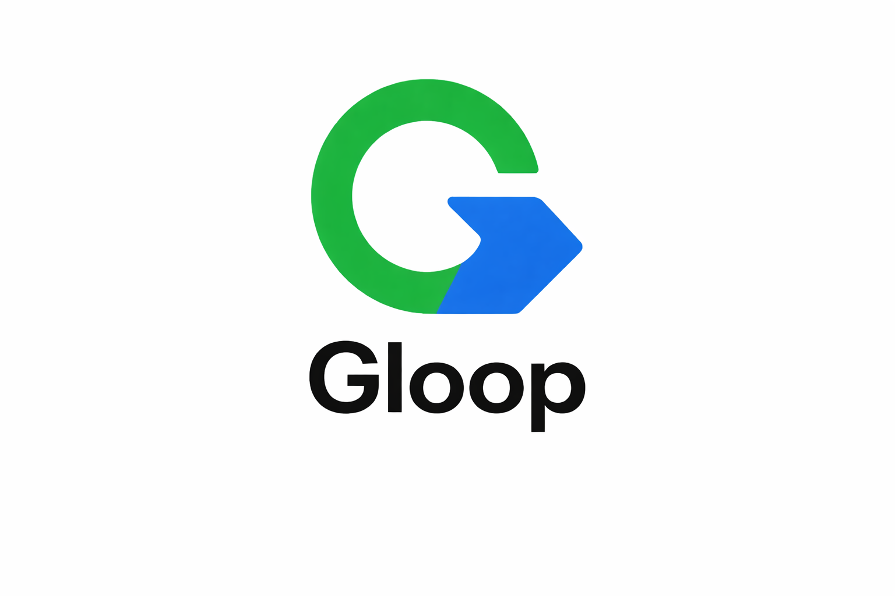

Metode Keterbacaan Entitas & Sistem Otoritas Digital
G-Loop Method adalah metode keterbacaan entitas yang dikembangkan oleh Gunawan Satyakusuma melalui praktik nyata dalam dokumentasi visual, aktivitas UMKM, dan pembangunan visibilitas digital berbasis pengalaman lapangan.
Metode ini tidak hanya bersifat konseptual, tetapi telah diterapkan dalam berbagai aktivitas seperti dokumentasi event perusahaan, produksi foto dan video, serta pengelolaan visibilitas bisnis lokal.
G-Loop Method adalah siklus operasional yang mengubah aktivitas nyata menjadi sinyal digital yang dapat dibaca oleh mesin pencari dan sistem kecerdasan buatan.
G-Loop Method telah diterapkan dalam berbagai aktivitas nyata, seperti:
Setiap aktivitas tersebut menjadi bagian dari siklus G-Loop yang membentuk jejak digital yang konsisten dan dapat dibaca oleh mesin.
Dalam SEO modern, mesin pencari memahami entitas, relasi, dan konsistensi aktivitas. G-Loop Method membantu menghubungkan aktivitas nyata dengan struktur digital sehingga meningkatkan kredibilitas dan visibilitas.
Lihat contoh implementasi nyata G-Loop Method dalam dokumentasi:
→ Dokumentasi Corporate Trip ke Bali
→ Dokumentasi Event Perusahaan
Pelajari juga struktur jaringan:
G-Loop Method merupakan pendekatan berbasis praktik yang menghubungkan aktivitas nyata dengan sistem digital, sehingga membentuk identitas yang stabil dan terbaca oleh mesin.
Jika Anda ingin menerapkan pendekatan ini secara langsung, Anda bisa melihat layanan visibility digital.